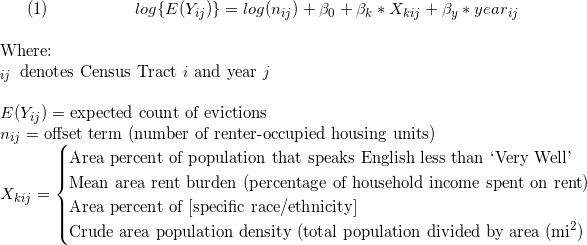
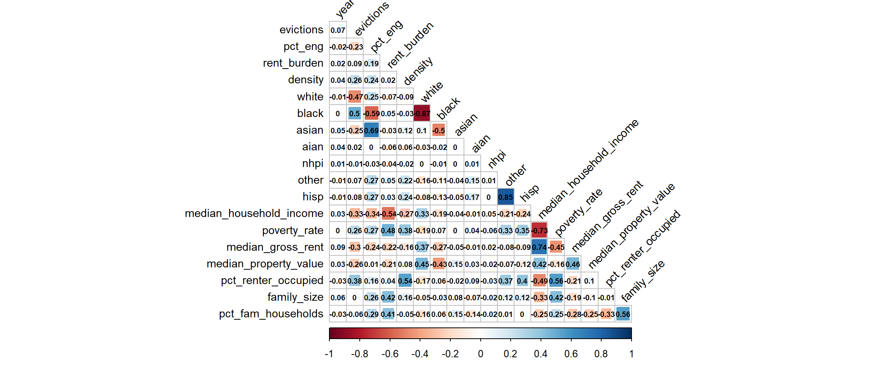
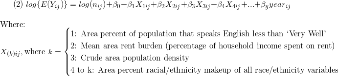
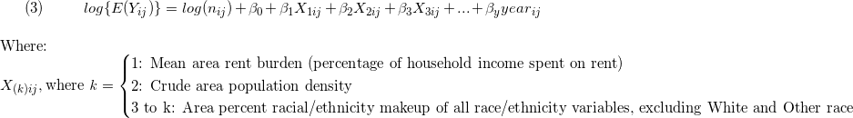
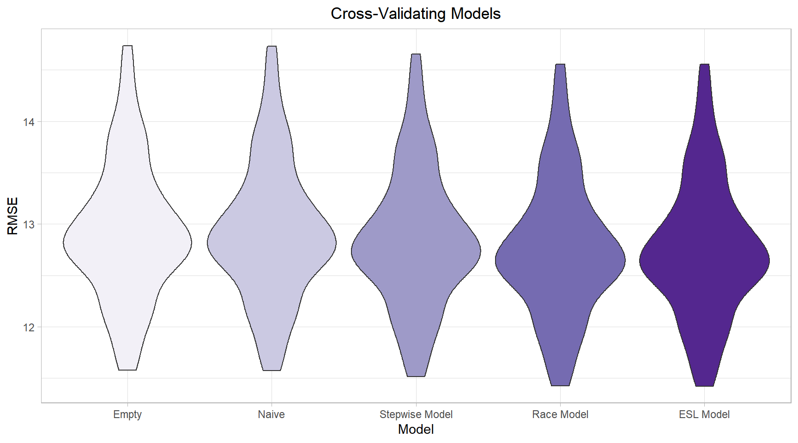

Project Report
Motivation
- Healthy People 2020 identified housing instability as a key issue in addressing social determinants of health in the United States.
- Evictions are an important element of housing instability, and approximately 2 million tenants were evicted nationwide in 2016.
- Evictions and eviction filings disproportionately affect low-income and minority residents, perpetuating cycles of poverty and instability.
- Discriminatory practices in evictions and eviction filings exist, and need to be better understood and addressed.
Questions
Our questions remained fairly stable throughout the development of our project. However, two major changes occurred as we explored the available data:
- Data were restricted to 2010-2016 due to limited availability of ACS (census) data for NYC
- NYC data were restricted to Brooklyn due to limited evictions data in other boroughs
Thus, our final questions are below, with respect to evictions in Brooklyn during the years 2010-2016:
- How have eviction rates changed over time by census tract in Brooklyn?
- Are there spatial patterns in the discrepancy between eviction filings and evictions at the neighborhood level? Do these patterns reflect distributions of other key variables of interest?
- How does the geographic distribution of eviction rates in Brooklyn correlate with other census tract characteristics such as language ability, racial composition, rent burden, and population density?
Data
Data Sources
Primary data source: Eviction Lab
For English language usage, race/ethnicity, family variables, and population density: American FactFinder
Supplemental data source (primarily geographic data): NYC Open Data
Variables of interest
Outcomes
evictionsandeviction_filings. Count of evictions (or eviction filings) per year at the census tract level.eviction_rateandeviction_filing_rate. Calculated using number of evictions or eviction filings divided by the number ofrenter_occupied_householdsand multiplied by 100, to be interpreted as a percentage.
Candidate Predictors
years_since_2010. Since our data range from 2010 to 2016, and we did not want to assume a constant effect of time, we included year as a set of indicator variables in all models except our empty model (see below).hisp. Percent of population (at census tract level, for all race/ethnicity variables) that self-report Hispanic ethnicity.white. Percent self-reporting White race.black. Percent self-reporting Black race.asian. Percent self-reporting Asian race.aian. Percent self-reporting American Indian / Alaska Native race.nhpi. Percent self-reporting Native Hawaiian / Pacific Islander race.other. Percent self-reporting other race.rent_burden. Average percent of income spent on rent.density. Population density.pct_eng. Percent of population who speak English less than ‘Very Well’. This is interpreted as a proxy for percent English as a second language (ESL) speakers.median_household_income. Median census tract household income in USD.poverty_rate. Percent living below Federal Poverty Line (FPL).median_gross_rent. Median census tract gross rent in USD.pct_renter_occupied. Percent of census tract occupied by renters.median_property_value. Median census tract property value in USD.family_size. Average family size in census tract.pct_fam_households. Percentage of census tract households that contain families.
Data Cleaning
After choosing to focus on New York City, data were limited to Brooklyn as this was the only borough with complete data for 2016 and also all yearly time points from 2010 to 2016. Datasets were merged using the 11-digit FIPs code, geoid.
First, we imported data on evictions over time in NYC, which included eviction rates and other relevant metrics by census tract. We excluded census tracts in which there were fewer than 10 renter-occupied households, since those neighborhoods were creating unstable eviction rate estimates.
# CSV file contains all census tracts for NY state, so we'll import the file and then filter such that the dataframe 'eviction' only contains NYC census tracts.
# contains years 2000 - 2016
# n = 1880 per year (1880 census tracts)
## importing
eviction =
read.csv('./data/EvictionData_NY.csv') %>%
janitor::clean_names() %>%
filter(parent_location %in% c("New York County, New York", "Queens County, New York", "Kings County, New York", "Bronx County, New York", "Richmond County, New York"),
year %in% c(2010:2016),
population != 0) %>%
## selecting and renaming variables
mutate(pct_nonwhite = (100 - pct_white),
geoid = as.character(geoid),
year = as.ordered(year)) %>%
select(geoid, year,
evictions, eviction_filings, eviction_rate, eviction_filing_rate, renter_occupied_households,
pct_nonwhite_evictiondata = pct_nonwhite,
poverty_rate, rent_burden, pct_af_am, pct_renter_occupied, median_gross_rent, median_household_income, median_property_value) %>%
filter(renter_occupied_households > 10)
To look at neighborhood-level data, sample weights were calculated by dividing the population of the census tract by the population of the neighborhood. These weights were then applied to all variables of interest to calculate aggregate measures by neighborhood.
eviction_data = read.csv('./data/EvictionData_NY.csv') %>%
janitor::clean_names() %>%
filter(year == 2016) %>%
mutate(
geoid = as.character(geoid)) %>%
filter(parent_location == "Kings County, New York") %>%
left_join(neighborhood_df, by = c("geoid" = "geo_id"))
neighborhood_data_prep = eviction_data %>%
group_by(neighborhood) %>%
mutate(
neighb_pop = sum(population),
tract_weight = population/neighb_pop,
eviction_discrepancy = eviction_filing_rate - eviction_rate,
weighted_eviction_discrep = eviction_discrepancy*tract_weight,
weighted_eviction_rate = eviction_rate*tract_weight,
weighted_eviction_filing_rate = eviction_filing_rate*tract_weight,
pct_nonwhite = 100 - pct_white,
weighted_pct_nonwhite = pct_nonwhite*tract_weight,
weighted_povertyrate = poverty_rate*tract_weight)
#creating weighted neighborhood-level variables
neighborhood_data = neighborhood_data_prep %>%
summarize(
wt_eviction_rate = round(as.numeric(sum(weighted_eviction_rate, na.rm = TRUE)), digits = 2),
wt_eviction_rate_discrep = round(sum(weighted_eviction_discrep, na.rm = TRUE), digits = 2),
wt_eviction_filing_rate = round(sum(weighted_eviction_filing_rate, na.rm = TRUE), digits = 2),
wt_pct_nonwhite = round(sum(weighted_pct_nonwhite, na.rm = TRUE), digits = 2),
wt_povertyrate = round(sum(weighted_povertyrate, na.rm = TRUE), digits = 2)) %>%
ungroup() %>%
mutate(neighborhood = as.factor(neighborhood))
Population density was calculated by dividing the number of people living in each census tract by the square miles of each census tract per year.
Population density
## For the ACS data, we'll have to use a crude measure of population density we calculate ourselves - census tract population (which changes every year) divided by census tract area (which does not usually change).
## NUMERATOR
## Importing population per census tract per year
filenames_DP05 =
list.files('./data/') %>%
paste0('./data/', .) %>%
as_tibble() %>%
filter(str_detect(value, 'DP05')) %>%
pull(., value) ## coerces tibble back to vector for reading by map_df()
population_data =
map_dfr(filenames_DP05, read_csv, .id = "input") %>%
janitor::clean_names() %>%
select(id = geo_id, id2 = geo_id2, geography = geo_display_label, total_pop = hc01_vc03, year = input) %>%
filter(id != "Id") %>%
mutate(id2 = as.numeric(id2),
year = as.numeric(year) + 2009,
name = as.character(readr::parse_number(geography)),
geography = str_remove(geography, "Census Tract [0-9]{1,}, "),
geography = str_remove(geography, "Census Tract [0-9]{1,}\\.[0-9]{1,}, "),
total_pop = as.numeric(total_pop)) %>%
select(id, id2, name, geography, total_pop, year) %>%
filter(total_pop != 0)
## DENOMINATOR
## Importing area in sq. mi. for each area:
area =
read_csv('./data/ACS_09_5YR_G001_with_ann.csv', skip = 1) %>%
janitor::clean_names() %>%
select(id, id2, geography, area_sqmi = land_area_in_square_miles) %>%
mutate(name = as.character(readr::parse_number(geography)),
geography = str_remove(geography, "Census Tract [0-9]{1,}, "),
geography = str_remove(geography, "Census Tract [0-9]{1,}\\.[0-9]{1,}, ")) %>%
select(id2, area_sqmi)
## JOINING DATASETS & CALCULATING DENSITY
density_data =
left_join(population_data, area, by = "id2") %>%
mutate(density = total_pop / area_sqmi,
id2 = as.character(id2),
year = as.ordered(year)) %>%
## selecting and renaming meaningful variables
filter(geography %in% c("New York County, New York", "Queens County, New York", "Kings County, New York", "Bronx County, New York", "Richmond County, New York"),
year %in% c(2010:2016)) %>%
select(geoid = id2, year, total_pop_densitydata = total_pop, area_sqmi, density)
English language usage data and racial/ethnic data were extracted from Census Bureau ACS data and created for each year. Unfortunately, the variable name in files available from Census Bureau changed from year to year, making data extraction more unwieldy and more difficult to use with functions such as map. Thus, we separately extracted relevant data from each year.
## English language usage data- we import data from 2010-2016
## Relevant variable (the percentage of the population 5 and over that speaks English less than "very well"), changes by year- files are therefore individually imported
englang_2010 =
read.csv("./data/ACS_10_5YR_DP02_with_ann.csv") %>%
janitor::clean_names() %>%
mutate(year = "2010", geo_id = as.character(geo_id), geo_id2 = as.character(geo_id2)) %>%
select(year, geo_id, geo_id2, hc03_vc170, hc03_vc04, hc01_vc21) %>% ## percent family households and avg family size
filter(geo_id != "Id") %>%
mutate(pct_eng = as.numeric(as.character(hc03_vc170)),
pct_fam_households = as.numeric(as.character(hc03_vc04)),
family_size = as.numeric(as.character(hc01_vc21))) %>%
select(-hc03_vc170, -hc03_vc04, -hc01_vc21)
englang_2011 =
read.csv("./data/ACS_11_5YR_DP02_with_ann.csv") %>%
janitor::clean_names() %>%
mutate(year = "2011", geo_id = as.character(geo_id), geo_id2 = as.character(geo_id2)) %>%
select(year, geo_id, geo_id2, hc03_vc170, hc03_vc04, hc01_vc21) %>% ## percent family households and avg family size
filter(geo_id != "Id") %>%
mutate(pct_eng = as.numeric(as.character(hc03_vc170)),
pct_fam_households = as.numeric(as.character(hc03_vc04)),
family_size = as.numeric(as.character(hc01_vc21))) %>%
select(-hc03_vc170, -hc03_vc04, -hc01_vc21)
englang_2012 =
read.csv("./data/ACS_12_5YR_DP02_with_ann.csv") %>%
janitor::clean_names() %>%
mutate(year = "2012", geo_id = as.character(geo_id), geo_id2 = as.character(geo_id2)) %>%
select(year, geo_id, geo_id2, hc03_vc170, hc03_vc04, hc01_vc21) %>% ## percent family households and avg family size
filter(geo_id != "Id") %>%
mutate(pct_eng = as.numeric(as.character(hc03_vc170)),
pct_fam_households = as.numeric(as.character(hc03_vc04)),
family_size = as.numeric(as.character(hc01_vc21))) %>%
select(-hc03_vc170, -hc03_vc04, -hc01_vc21)
englang_2013 =
read.csv("./data/ACS_13_5YR_DP02_with_ann.csv") %>%
janitor::clean_names() %>%
mutate(year = "2013", geo_id = as.character(geo_id), geo_id2 = as.character(geo_id2)) %>%
select(year, geo_id, geo_id2, hc03_vc173, hc03_vc04, hc01_vc21) %>% ## percent family households and avg family size
filter(geo_id != "Id") %>%
mutate(pct_eng = as.numeric(as.character(hc03_vc173)),
pct_fam_households = as.numeric(as.character(hc03_vc04)),
family_size = as.numeric(as.character(hc01_vc21))) %>%
select(-hc03_vc173, -hc03_vc04, -hc01_vc21)
englang_2014 =
read.csv("./data/ACS_14_5YR_DP02_with_ann.csv") %>%
janitor::clean_names() %>%
mutate(year = "2014", geo_id = as.character(geo_id), geo_id2 = as.character(geo_id2)) %>%
select(year, geo_id, geo_id2, hc03_vc173, hc03_vc04, hc01_vc22) %>% ## percent family households and avg family size
filter(geo_id != "Id") %>%
mutate(pct_eng = as.numeric(as.character(hc03_vc173)),
pct_fam_households = as.numeric(as.character(hc03_vc04)),
family_size = as.numeric(as.character(hc01_vc22))) %>%
select(-hc03_vc173, -hc03_vc04, -hc01_vc22)
englang_2015 =
read.csv("./data/ACS_15_5YR_DP02_with_ann.csv") %>%
janitor::clean_names() %>%
mutate(year = "2015", geo_id = as.character(geo_id), geo_id2 = as.character(geo_id2)) %>%
select(year, geo_id, geo_id2, hc03_vc173, hc03_vc04, hc01_vc22) %>% ## percent family households and avg family size
filter(geo_id != "Id") %>%
mutate(pct_eng = as.numeric(as.character(hc03_vc173)),
pct_fam_households = as.numeric(as.character(hc03_vc04)),
family_size = as.numeric(as.character(hc01_vc22))) %>%
select(-hc03_vc173, -hc03_vc04, -hc01_vc22)
englang_2016 =
read.csv("./data/ACS_16_5YR_DP02_with_ann.csv") %>%
janitor::clean_names() %>%
mutate(year = "2016", geo_id = as.character(geo_id), geo_id2 = as.character(geo_id2)) %>%
select(year, geo_id, geo_id2, hc03_vc173, hc03_vc04, hc01_vc22) %>% ## percent family households and avg family size
filter(geo_id != "Id") %>%
mutate(pct_eng = as.numeric(as.character(hc03_vc173)),
pct_fam_households = as.numeric(as.character(hc03_vc04)),
family_size = as.numeric(as.character(hc01_vc22))) %>%
select(-hc03_vc173, -hc03_vc04, -hc01_vc22)
englang_data =
bind_rows(englang_2010, englang_2011, englang_2012, englang_2013, englang_2014, englang_2015, englang_2016) %>%
mutate(geo_id2 = as.character(geo_id2),
year = as.ordered(year)) %>%
## restricting and renaming etc.
select(geoid = geo_id2, year, pct_eng, family_size, pct_fam_households) %>%
## bronx, kings, new york, queens, richmond counties - using codes (need to triple-check these match up with County Names)
filter(substr(geoid, 1,5) %in% c(36005, 36047, 36061, 36081, 36085),
year %in% c(2010:2016))
## Racial composition data- we import data from 2010-2016
## Racial categories are not mutually exclusive, so total percentages may sum to more than 100%
## Relevant variable (the percentage of the population 5 and over that speaks English less than "very well"), changes by year- files are therefore individually imported
race_2010 =
read.csv("./data/ACS_10_5YR_DP05_with_ann.csv") %>%
janitor::clean_names() %>%
mutate(year = "2010", geo_id = as.character(geo_id), geo_id2 = as.character(geo_id2)) %>%
select(year, geo_id, geo_id2, hc03_vc72, hc03_vc73, hc03_vc74, hc03_vc75, hc03_vc76, hc03_vc77, hc03_vc82) %>%
filter(geo_id != "Id") %>%
rename(white = hc03_vc72, black = hc03_vc73, aian = hc03_vc74, asian = hc03_vc75, nhpi = hc03_vc76, other = hc03_vc77, hisp = hc03_vc82
) %>%
mutate(
white = as.numeric(as.character(white)),
black = as.numeric(as.character(black)),
aian = as.numeric(as.character(aian)),
asian = as.numeric(as.character(asian)),
nhpi = as.numeric(as.character(nhpi)),
other = as.numeric(as.character(other)),
hisp = as.numeric(as.character(hisp))
)
race_2011 =
read.csv("./data/ACS_11_5YR_DP05_with_ann.csv") %>%
janitor::clean_names() %>%
mutate(year = "2011", geo_id = as.character(geo_id), geo_id2 = as.character(geo_id2)) %>%
select(year, geo_id, geo_id2, hc03_vc72, hc03_vc73, hc03_vc74, hc03_vc75, hc03_vc76, hc03_vc77, hc03_vc82) %>%
filter(geo_id != "Id") %>%
rename(white = hc03_vc72, black = hc03_vc73, aian = hc03_vc74, asian = hc03_vc75, nhpi = hc03_vc76, other = hc03_vc77, hisp = hc03_vc82) %>%
mutate(
white = as.numeric(as.character(white)),
black = as.numeric(as.character(black)),
aian = as.numeric(as.character(aian)),
asian = as.numeric(as.character(asian)),
nhpi = as.numeric(as.character(nhpi)),
other = as.numeric(as.character(other)),
hisp = as.numeric(as.character(hisp))
)
race_2012 =
read.csv("./data/ACS_12_5YR_DP05_with_ann.csv") %>%
janitor::clean_names() %>%
mutate(year = "2012", geo_id = as.character(geo_id), geo_id2 = as.character(geo_id2)) %>%
select(year, geo_id, geo_id2, hc03_vc72, hc03_vc73, hc03_vc74, hc03_vc75, hc03_vc76, hc03_vc77, hc03_vc82) %>%
filter(geo_id != "Id") %>%
rename(white = hc03_vc72, black = hc03_vc73, aian = hc03_vc74, asian = hc03_vc75, nhpi = hc03_vc76, other = hc03_vc77, hisp = hc03_vc82) %>%
mutate(
white = as.numeric(as.character(white)),
black = as.numeric(as.character(black)),
aian = as.numeric(as.character(aian)),
asian = as.numeric(as.character(asian)),
nhpi = as.numeric(as.character(nhpi)),
other = as.numeric(as.character(other)),
hisp = as.numeric(as.character(hisp))
)
race_2013 =
read.csv("./data/ACS_13_5YR_DP05_with_ann.csv") %>%
janitor::clean_names() %>%
mutate(year = "2013", geo_id = as.character(geo_id), geo_id2 = as.character(geo_id2)) %>%
select(year, geo_id, geo_id2, hc03_vc78, hc03_vc79, hc03_vc80, hc03_vc81, hc03_vc82, hc03_vc83, hc03_vc88) %>%
filter(geo_id != "Id") %>%
rename(white = hc03_vc78, black = hc03_vc79, aian = hc03_vc80, asian = hc03_vc81, nhpi = hc03_vc82, other = hc03_vc83, hisp = hc03_vc88) %>%
mutate(
white = as.numeric(as.character(white)),
black = as.numeric(as.character(black)),
aian = as.numeric(as.character(aian)),
asian = as.numeric(as.character(asian)),
nhpi = as.numeric(as.character(nhpi)),
other = as.numeric(as.character(other)),
hisp = as.numeric(as.character(hisp))
)
race_2014 =
read.csv("./data/ACS_14_5YR_DP05_with_ann.csv") %>%
janitor::clean_names() %>%
mutate(year = "2014", geo_id = as.character(geo_id), geo_id2 = as.character(geo_id2)) %>%
select(year, geo_id, geo_id2, hc03_vc78, hc03_vc79, hc03_vc80, hc03_vc81, hc03_vc82, hc03_vc83, hc03_vc88) %>%
filter(geo_id != "Id") %>%
rename(white = hc03_vc78, black = hc03_vc79, aian = hc03_vc80, asian = hc03_vc81, nhpi = hc03_vc82, other = hc03_vc83, hisp = hc03_vc88) %>%
mutate(
white = as.numeric(as.character(white)),
black = as.numeric(as.character(black)),
aian = as.numeric(as.character(aian)),
asian = as.numeric(as.character(asian)),
nhpi = as.numeric(as.character(nhpi)),
other = as.numeric(as.character(other)),
hisp = as.numeric(as.character(hisp))
)
race_2015 =
read.csv("./data/ACS_15_5YR_DP05_with_ann.csv") %>%
janitor::clean_names() %>%
mutate(year = "2015", geo_id = as.character(geo_id), geo_id2 = as.character(geo_id2)) %>%
select(year, geo_id, geo_id2, hc03_vc78, hc03_vc79, hc03_vc80, hc03_vc81, hc03_vc82, hc03_vc83, hc03_vc88) %>%
filter(geo_id != "Id") %>%
rename(white = hc03_vc78, black = hc03_vc79, aian = hc03_vc80, asian = hc03_vc81, nhpi = hc03_vc82, other = hc03_vc83, hisp = hc03_vc88) %>%
mutate(
white = as.numeric(as.character(white)),
black = as.numeric(as.character(black)),
aian = as.numeric(as.character(aian)),
asian = as.numeric(as.character(asian)),
nhpi = as.numeric(as.character(nhpi)),
other = as.numeric(as.character(other)),
hisp = as.numeric(as.character(hisp))
)
race_2016 =
read.csv("./data/ACS_16_5YR_DP05_with_ann.csv") %>%
janitor::clean_names() %>%
mutate(year = "2016", geo_id = as.character(geo_id), geo_id2 = as.character(geo_id2)) %>%
select(year, geo_id, geo_id2, hc03_vc78, hc03_vc79, hc03_vc80, hc03_vc81, hc03_vc82, hc03_vc83, hc03_vc88) %>% ## ADDED HISPANIC
filter(geo_id != "Id") %>%
rename(white = hc03_vc78, black = hc03_vc79, aian = hc03_vc80, asian = hc03_vc81, nhpi = hc03_vc82, other = hc03_vc83, hisp = hc03_vc88) %>%
mutate(
white = as.numeric(as.character(white)),
black = as.numeric(as.character(black)),
aian = as.numeric(as.character(aian)),
asian = as.numeric(as.character(asian)),
nhpi = as.numeric(as.character(nhpi)),
other = as.numeric(as.character(other)),
hisp = as.numeric(as.character(hisp))
)
race_data =
bind_rows(race_2010, race_2011, race_2012, race_2013, race_2014, race_2015, race_2016) %>%
## creating % nonwhite
mutate(pct_nonwhite_racedata = (100 - white),
geo_id2 = as.character(geo_id2),
year = as.ordered(year)) %>%
rename(geoid = geo_id2) %>%
## bronx, kings, new york, queens, richmond counties - using codes (need to triple-check these match up with County Names)
filter(substr(geoid, 1,5) %in% c(36005, 36047, 36061, 36081, 36085),
year %in% c(2010:2016)) %>%
## restricting and renaming etc.
select(-geo_id)
Since geoid (FIPs codes) are not inherently interpretable, we created a key to translate them from FIPs to boro.
## creating key for geoid <--> boro
geoid_boro_key =
read.csv('./data/EvictionData_NY.csv') %>%
janitor::clean_names() %>%
filter(parent_location %in% c("New York County, New York", "Queens County, New York", "Kings County, New York", "Bronx County, New York", "Richmond County, New York"),
year %in% c(2010:2016)) %>%
select(geoid, county = parent_location) %>%
mutate(geoid = as.character(geoid),
boro = recode(county, "New York County, New York" = "Manhattan",
"Queens County, New York" = "Queens",
"Kings County, New York" = "Brooklyn",
"Bronx County, New York" = "Bronx",
"Richmond County, New York" = "Staten Island")) %>%
distinct()
Finally, we joined all datasets using a combination of geoid (FIPs codes) and year as unique identifier across tables.
## all rows regardless of NA, using outer (full) join
joined_data =
eviction %>%
full_join(., density_data, by = c("geoid", "year")) %>%
full_join(., englang_data, by = c("geoid", "year")) %>%
full_join(., race_data, by = c("geoid", "year")) %>%
inner_join(., geoid_boro_key, by = "geoid") %>%
mutate(years_since_2010 = as.numeric(year) - 1) %>% ## continuous year measure range 0-6, years since 2010
## reordering variables
select(geoid, year, years_since_2010, boro, county, ## geo/time
evictions, eviction_rate, eviction_filings, eviction_filing_rate, ## outcomes
pct_nonwhite_racedata, white, black, aian, asian, nhpi, other, hisp, ## race predictors
rent_burden, pct_eng, density, ## other predictors
renter_occupied_households, total_pop_densitydata, area_sqmi, ## calculation variables
poverty_rate, pct_af_am, pct_renter_occupied, median_gross_rent, median_household_income, median_property_value, family_size, pct_fam_households ## contextual predictor variables
)
## just brooklyn
joined_data_bklyn =
joined_data %>%
filter(boro == "Brooklyn")
joined_data_bklyn %>%
saveRDS(file = './data/joined_data_bklyn') ## saving to use in other files (use [obj_name] = readRDS([pathway]) )
## all rows with all needed information, no missing
joined_data_bklyn_nomissing =
joined_data_bklyn %>%
drop_na()
joined_data_bklyn_nomissing %>%
saveRDS(file = './data/joined_data_bklyn_nomissing') ## saving to use in other files (use [obj_name] = readRDS([pathway]) )
Exploratory Analysis
What Predicts Eviction Rates?
Question: How does the geographic distribution of eviction rates in Brooklyn correlate with other census tract characteristics such as language ability, racial composition, rent burden, and population density?
To explore the question of how the geographic distribution of eviction rates correlated with our predictors of interest, we created choropleths of our four predictors (percentage of ESL speakers, percentage of non-White residents, rent burden, and population density) with eviction rates overlaid in Brooklyn by census tract in 2016.
Census tract and neighborhood shapefiles were downloaded from NYC Open Data and limited to Brooklyn. We then defined aesthetic mappings.
# Loading in Brooklyn data
joined_data_bklyn_2016 =
readRDS('./data/joined_data_bklyn') %>%
filter(year == "2016")
# Loading census tract shapefiles from NYC OpenData:
census_tracts = readOGR(dsn = "maps/2010-census-tracts.shp", encoding = "UTF-8")
census_tracts =
census_tracts[census_tracts$boro_name == "Brooklyn", ]
# The following step removes null values from the dataset based on filtering values above
writeOGR(census_tracts,"./mapping_files","census_temp", driver = "ESRI Shapefile", overwrite_layer = TRUE)
census_tracts = readOGR("./mapping_files","census_temp")
# Constructing geoid for merging
census_tracts@data =
census_tracts@data %>%
mutate(
county_code = as.character(recode(boro_code, "1" = "061", "2" = "005", "3" = "047", "4" = "081", "5" = "085")),
ct2010 = as.character(ct2010),
fips_11dig = paste0("36", county_code, ct2010),
long = coordinates(spTransform(census_tracts, CRS("+proj=longlat +datum=WGS84")))[,1],
lat = coordinates(spTransform(census_tracts, CRS("+proj=longlat +datum=WGS84")))[,2]
) %>%
unnest(c(long, lat))
# Joining data and shapefiles
census_tracts@data = left_join(census_tracts@data, joined_data_bklyn_2010, by = c("fips_11dig" = "geoid"))
# Create map projection ready for mapping
census_tracts_crs =
spTransform(census_tracts, CRS("+init=epsg:4326"))
########## Creating mapping aesthetics ##########
# Labels
esl_popup = paste0(
"<strong>Census tract: </strong>",
census_tracts_crs$ctlabel,
"<br><strong>Eviction rate: </strong>",
census_tracts_crs$eviction_rate,
"<br><strong>% ESL: </strong>",
census_tracts_crs$pct_eng
)
nonwhite_popup = paste0(
"<strong>Census tract: </strong>",
census_tracts_crs$ctlabel,
"<br><strong>Eviction rate: </strong>",
census_tracts_crs$eviction_rate,
"<br><strong>% non-White: </strong>",
census_tracts_crs$pct_nonwhite_racedata
)
rentburden_popup = paste0(
"<strong>Census tract: </strong>",
census_tracts_crs$ctlabel,
"<br><strong>Eviction rate: </strong>",
census_tracts_crs$eviction_rate,
"<br><strong>Rent burden: </strong>",
census_tracts_crs$rent_burden
)
popdensity_popup = paste0(
"<strong>Census tract: </strong>",
census_tracts_crs$ctlabel,
"<br><strong>Eviction rate: </strong>",
census_tracts_crs$eviction_rate,
"<br><strong>Population Density: </strong>",
census_tracts_crs$total_pop_densitydata
)
# Obtaining Jenks natural break points for continuous predictors
getJenksBreaks(census_tracts_crs$pct_eng, 5)
getJenksBreaks(census_tracts_crs$pct_nonwhite_racedata, 5)
getJenksBreaks(census_tracts_crs$rent_burden, 5)
getJenksBreaks(census_tracts_crs$total_pop_densitydata, 5)
# Setting bins based on Jenks natural breaks
pct_eng_bins = c(0, 12.9, 26.3, 43.3, 73.3)
nonwhite_bins = c(0, 26.3, 52.5, 78.2, 100)
rentburden_bins = c(13.0, 29.2, 35.2, 42.5, 50.0)
popdensity_bins = c(8, 2494, 3736, 5240, 8953)
# Setting color based on bins
eng_palette = colorBin('Blues', bins = pct_eng_bins, na.color = '#d9d9d9')
nonwhite_palette = colorBin('Blues', bins = nonwhite_bins, na.color = '#d9d9d9')
rentburden_palette = colorBin('Blues', bins = rentburden_bins, na.color = '#d9d9d9')
popdensity_palette = colorBin('Blues', bins = popdensity_bins, na.color = '#d9d9d9')
# Create custom legend for eviction circle marker sizes
addLegendCustom <- function(map, position, colors, labels, sizes, opacity = 0.4, title = "Eviction Rate"){
colorAdditions <- paste0(colors, "; border-radius: 50%; width:", sizes, "px; height:", sizes, "px")
labelAdditions <- paste0("<div style='display: inline-block;height: ",
sizes, "px;margin-top: 4px;line-height: ",
sizes, "px;'>",
labels, "</div>")
return(addLegend(map, position = "bottomright", colors = colorAdditions, labels = labelAdditions, opacity = opacity, title = title))
}One map was created for each predictor of interest, and corresponding aesthetics were applied.
# % ESL
leaflet::leaflet(data = census_tracts_crs) %>%
addProviderTiles('CartoDB.Positron') %>%
addPolygons(
fillColor = ~eng_palette(pct_eng),
fillOpacity = 0.8,
color = "BDBDC3",
weight = 1,
popup = esl_popup,
highlightOptions = highlightOptions(color = "black", weight = 2, bringToFront = TRUE)) %>%
addLegend('bottomleft',
pal = eng_palette,
values = ~pct_eng,
title = '% ESL',
opacity = 1) %>%
addCircleMarkers(
lat = ~ census_tracts_crs$lat,
lng = ~ census_tracts_crs$long,
color = "red",
radius = (sqrt(census_tracts_crs$eviction_rate)*2),
weight = 0
) %>%
addLegendCustom(colors = c("red", "red", "red"),
labels = c("1", "3", "8"), sizes = c(4, 6.9282, 11.3137))
# % non-White
leaflet::leaflet(data = census_tracts_crs) %>%
addProviderTiles('CartoDB.Positron') %>%
addPolygons(
fillColor = ~nonwhite_palette(pct_nonwhite_racedata),
fillOpacity = 0.8,
color = "BDBDC3",
weight = 1,
popup = nonwhite_popup,
highlightOptions = highlightOptions(color = "black", weight = 2, bringToFront = TRUE)) %>%
addLegend('bottomleft',
pal = nonwhite_palette,
values = ~pct_nonwhite_racedata,
title = '% non-White',
opacity = 1) %>%
addCircleMarkers(
lat = ~ census_tracts_crs$lat,
lng = ~ census_tracts_crs$long,
color = "red",
radius = (sqrt(census_tracts_crs$eviction_rate)*2),
weight = 0
) %>%
addLegendCustom(colors = c("red", "red", "red"),
labels = c("2", "6", "25"), sizes = c(5.6569, 9.7980, 20))
# Rent Burden
leaflet::leaflet(data = census_tracts_crs) %>%
addProviderTiles('CartoDB.Positron') %>%
addPolygons(
fillColor = ~rentburden_palette(rent_burden),
fillOpacity = 0.8,
color = "BDBDC3",
weight = 1,
popup = rentburden_popup,
highlightOptions = highlightOptions(color = "black", weight = 2, bringToFront = TRUE)) %>%
addLegend('bottomleft',
pal = rentburden_palette,
values = ~rent_burden,
title = 'Rent Burden',
opacity = 1) %>%
addCircleMarkers(
lat = ~ census_tracts_crs$lat,
lng = ~ census_tracts_crs$long,
color = "red",
radius = (sqrt(census_tracts_crs$eviction_rate)*2),
weight = 0
) %>%
addLegendCustom(colors = c("red", "red", "red"),
labels = c("2", "6", "25"), sizes = c(5.6569, 9.7980, 20))
# Population Density
leaflet::leaflet(data = census_tracts_crs) %>%
addProviderTiles('CartoDB.Positron') %>%
addPolygons(
fillColor = ~popdensity_palette(total_pop_densitydata),
fillOpacity = 0.8,
color = "BDBDC3",
weight = 1,
popup = popdensity_popup,
highlightOptions = highlightOptions(color = "black", weight = 2, bringToFront = TRUE)) %>%
addLegend('bottomleft',
pal = popdensity_palette,
values = ~total_pop_densitydata,
title = 'Population Density',
opacity = 1) %>%
addCircleMarkers(
lat = ~ census_tracts_crs$lat,
lng = ~ census_tracts_crs$long,
color = "red",
radius = (sqrt(census_tracts_crs$eviction_rate)*2),
weight = 0
) %>%
addLegendCustom(colors = c("red", "red", "red"),
labels = c("2", "6", "25"), sizes = c(5.6569, 9.7980, 20))
In addition to eviction rates being geographically clustered, we also found that the percentage of ESL speakers, percentage of non-White residents, and high rent burden appeared to be geographically clustered.
We identified a clear positive association between the percentage of non-White residents and evictions rates in a given census tract. The percentage of ESL speakers in a given census tract appeared to be inversely related to eviction rates; we decided to further examine whether the percentage of non-White residents confounded the relationship between percentage of ESL speakers and eviction rates. Relationships between rent burden, population density, and eviction rates were less obvious; we conducted further exploratory analyses during model building.
The results of our exploratory analyses were used to inform further model building.
Evictions Over Time 2000-2016
Question: How have eviction rates in Brooklyn changed over time?
To explore the question of how eviction rates in Brooklyn have changed over time (2000 to 2016), we created a graphical user interface using the Shiny package. There are two components to this interface:
- A spaghetti plot depicting eviction rates from 2000 to 2016 in Brooklyn broken down by neighborhood.
# Reading in and cleaning data for neighborhood-level spaghetti plot over time
# Read NYC neighborhood data
neighborhood_df =
read_excel("./data/NYC_neighborhoods_by_censustract_2010.xlsx",
skip = 5,
col_names = c("borough", "county_code", "boro_code", "census_tract", "PUMA", "nta_code", "neighborhood")
) %>%
#creating 11 digit FIPS code by pasting country code (36) with `county_code` and `census_tract`
mutate(geo_id = paste0("36", county_code, census_tract)
)
# Read Eviction data, limit to Brooklyn, join to neighborhood_df
brooklyn_data = read.csv('./data/EvictionData_NY.csv') %>%
janitor::clean_names() %>%
mutate(geoid = as.character(geoid)) %>%
filter(parent_location == "Kings County, New York") %>%
left_join(neighborhood_df, by = c("geoid" = "geo_id"))
# Code weighted neighborhood eviction rate
brooklyn_data = brooklyn_data %>%
group_by(neighborhood, year) %>%
mutate(
neighb_pop = sum(population),
tract_weight = population/neighb_pop,
weighted_eviction_rate = eviction_rate*tract_weight)
brooklyn_data = brooklyn_data %>%
summarize(
Eviction_Rate = as.numeric(sum(weighted_eviction_rate))
) %>%
ungroup() %>%
mutate(neighborhood = as.factor(neighborhood))
brooklyn_data <- within(brooklyn_data, Eviction_Rate[neighborhood == 'park-cemetery-etc-Brooklyn'] <- NA)
brooklyn_data <- within(brooklyn_data, wt_eviction_rate_discrep[neighborhood == 'park-cemetery-etc-Brooklyn'] <- NA)
# Pulled list of brooklyn neighborhoods from brooklyn eviction data
neighborhoods = brooklyn_data %>% distinct(neighborhood) %>% pull()
# Created checkbox input of Brooklyn neighborhood
checkboxGroupInput("neighborhood_choice", label=h3("Select Neighborhood"),
choices = neighborhoods, selected = "Williamsburg")
# Used renderPlotly function to plot eviction rates over time with Neighborhood widget
renderPlotly({
brooklyn_data =
brooklyn_data %>%
filter(
neighborhood == input[["neighborhood_choice"]]
)
brooklyn_data %>%
group_by(year) %>%
ungroup() %>%
plot_ly(x=~year, y=~Eviction_Rate, type="scatter", mode="lines+markers", color = ~neighborhood) %>%
layout(title="Eviction Rate (%) Over Time (2000-2016) by Brooklyn Neighborhood")
})
# Published to shinyapp.io- A map depicting eviction rates from 2000 to 2016 in Brooklyn broken down by census tract.
# Read joined brooklyn data
joined_data_bklyn = readRDS('./data/joined_data_bklyn')
# Loading census tract shapefiles from NYC OpenData:
census_tracts = readOGR(dsn = "maps/2010-census-tracts.shp", encoding = "UTF-8", verbose=FALSE)
census_tracts =
census_tracts[census_tracts$boro_name == "Brooklyn", ]
writeOGR(census_tracts,"./mapping_files","census_temp", driver = "ESRI Shapefile", overwrite_layer = TRUE)
census_tracts = readOGR("./mapping_files","census_temp", verbose=FALSE)
# Constructing geoid for merging
census_tracts@data =
census_tracts@data %>%
mutate(
county_code = as.character(recode(boro_code, "1" = "061", "2" = "005", "3" = "047", "4" = "081", "5" = "085")),
ct2010 = as.character(ct2010),
fips_11dig = paste0("36", county_code, ct2010),
long = coordinates(spTransform(census_tracts, CRS("+proj=longlat +datum=WGS84")))[,1],
lat = coordinates(spTransform(census_tracts, CRS("+proj=longlat +datum=WGS84")))[,2]
) %>%
unnest(c(long, lat))
# Create slider widget for years 2000-2016
sliderInput("years", "Year of Observation",
min = 2000, max = 2016, step=1, value = 2000
)
# Plot interactive census tract-level map of eviction rates using renderLeaflet
renderLeaflet({
joined_data_bklyn_year =
joined_data_bklyn %>%
filter(year==input[["years"]])
# Joining data and shapefiles
census_tracts@data = left_join(census_tracts@data, joined_data_bklyn_year, by = c("fips_11dig" = "geoid"))
# spatial transform
census_tracts_crs = spTransform(census_tracts, CRS("+init=epsg:4326"))
# get jenks natural breaks
getJenksBreaks(census_tracts_crs$eviction_rate, 5)
#set bins based on natural breaks
eviction_rate_bins = c(0, 1.23, 2.51, 4.12, 7.62)
#set color palette
eviction_palette = colorBin('Reds', bins = eviction_rate_bins, na.color = '#d9d9d9')
leaflet::leaflet(data = census_tracts_crs) %>%
addProviderTiles('CartoDB.Positron') %>%
addPolygons(
fillColor = ~eviction_palette(eviction_rate),
fillOpacity = 0.8,
color = "BDBDC3",
weight = 1,
highlightOptions = highlightOptions(color = "black", weight = 2, bringToFront = TRUE)) %>%
addLegend('bottomleft',
pal = eviction_palette,
values = ~eviction_rate,
title = 'Eviction Rates in NYC by census tract',
opacity = 1)
})The visualizations of eviction rates over time were demonstrative of the fact that eviction rates are not only substantially heterogeneous throughout the borough, but have been quite dynamic over time. Neighborhood-level heterogeneity is apparent from the spaghetti plot. Eviction rates have generally declined over time, although neighborhood exceptions exist, including Brownsville and East New York, which have remained relatively untouched by the gentrification processes that have permeated wide swaths of Brooklyn in the past decade. These neighborhoods have consistently reported among the highest poverty and crime rates in New York City. According to NYU’s Furman Center, Park Slope/Carroll Gardens and Williamsburg/Greenpoint comprise two of the three neighborhoods with the lowest eviction filing rates in the city.
The changes in eviction rates over time is perhaps most apparent from the interactive census tract map of the borough. There is a stark change in the eviction rate composition throughout Brooklyn from the year 2000 to the year 2016. In the former portion of this observation period (2000 to ~2006), wide swaths of Brooklyn had eviction rates between 2.5% to 7.2%, with visibly concentrated pockets of census tracts being in the highest quartile of eviction rates (4.1-7.2%). In the latter years of this observation period, notably 2012-2016, pockets of Brooklyn with eviction rates in the top two quartiles (2.5% to 7.2%) are far more sparse.
As we explore in subsequent analyses, changing eviction rates may very well be in part attributal to factors associated with the changing urban landscape of Brooklyn and New York City as a whole (poverty rate, property values, demographic composition, etc). However, in recent years, public discourse surrounding the declining eviction rates in New York City frequently acknowledges legislative efforts on behalf of the city toward protecting tenants rights. Such legislative efforts include the 2017 creation of a Universal Access to Counsel program, which gives tenants with incomes below 200 percent of the federal poverty level who are facing an eviction in housing court access to an attorney. Beginning in 2014, the city began allocating more money ($46 million from 2014-2016) for legal services for tenants in precarious housing circumstances. In June 2019, the city enacted a series of tenant protection laws designed to stop landlords from evicting tenants on short notice or without justification.
Formal Analysis
Predictors of Eviction in Brooklyn, 2010-2016
Setup
First, we’d like to integrate neighborhood as a potential predictor in our models, so we joined our existing data from above with a dataset including both neighborhood name and geoid.
# joined_data_bklyn_nomissing =
# readRDS('./data/joined_data_bklyn_nomissing')
## integrating neighborhood as predictor
neighborhood_df =
read_excel("./data/NYC_neighborhoods_by_censustract_2010.xlsx",
skip = 5,
col_names = c("borough", "county_code", "boro_code", "census_tract", "PUMA", "nta_code", "neighborhood")
) %>%
#creating 11 digit FIPS code by pasting country code (36) with `county_code` and `census_tract`
mutate(geo_id = paste0("36", county_code, census_tract)
) %>%
rename(geoid = geo_id)
joined_data_bklyn_nomissing =
left_join(joined_data_bklyn_nomissing,
neighborhood_df) %>%
select(colnames(joined_data_bklyn_nomissing), neighborhood) %>%
mutate(neighborhood = as.factor(neighborhood),
years_since_2010 = as.factor(years_since_2010))
Overview
Using existing data, we wanted to investigate factors that are associated with - and can potentially be used to predict - eviction rates among census tracts in Brooklyn.
We propose using Generalized Estimating Equations (GEE). GEEs can be used to model correlated/hierarchical data, distinction of within-group and between-group estimates is not desired Since our data are repeated over time within census tract (2010-2016), we expect there to be autocorrelation present across years, and we can address this using GEE modeling techniques.
More specifically, we propose using a GEE modelling framework with a log link function. Our outcome variable, eviction rate, is calculated by dividing count of evictions by the number of renter-occupied households; since this is based on a count variable, evictions, we expect our outcome to assume a Poisson distribution. Thus, we can use a log link function to model the expected count of evictions, and include the denominator of our eviction rate - number of renter-occupied households - as an offset term in the right-hand side of our equation.
Finally, we propose using an AR(1) correlation structure, since autocorrelation can be reasonably expected given our data are measured over time. (In short, this means that, as one data point moves farther away from another correlated data point, the correlation between them decreases exponentially. We might reasonably expect this to happen over time with our data - e.g. a census tract’s 2006 eviction rate may be more similar to its 2005 eviction rate than to its 2000 eviction rate.)
Since our outcome, eviction rate, is calculated using a count variable (number of evictions) repeated over time within areas, we’ll model it using GEE with a Poisson link function.
#####
## poisson distribution of counts (and rates)
joined_data_bklyn_nomissing %>%
ggplot(aes(x = eviction_rate)) +
geom_histogram(binwidth = 0.1) +
theme_light() +
labs(x = "Eviction count per 100 renter-occupied households",
y = "Count",
title = "Distribution of eviction counts, standardized by area") +
theme(plot.title = element_text(hjust = 0.5))
Relevant predictors
Although we formulated specific hypotheses regarding predictors of eviction in Brooklyn based on existing research, we wanted to include as many potential predictors as possible to test against our hypothesized predictors. The data we are using includes the following variables:
evictions. Number of evictions at census level.eviction_filings. Number of eviction filings at census level.renter_occupied_households. Number of renter occupied households in census tract. As mentioned above, this forms the denominator of our modelled rate and will be included in all models as an offset term (aslog(renter_occupied_households)).years_since_2010. Since our data range from 2010 to 2016, and we did not want to assume a constant effect of time, we included year as a set of indicator variables in all models except our empty model (see below).hisp. Percent of population (at census tract level, for all race/ethnicity variables) that self-report Hispanic ethnicity.white. Percent self-reporting White race.black. Percent self-reporting Black race.asian. Percent self-reporting Asian race.aian. Percent self-reporting American Indian / Alaska Native race.nhpi. Percent self-reporting Native Hawaiian / Pacific Islander race.other. Percent self-reporting other race.rent_burden. Average percent of income spent on rent.density. Population density.pct_eng. Percent of population who speak English less than ‘Very Well’. This is interpreted as a proxy for percent English as a second language (ESL) speakers.median_household_income. Median census tract household income in USD.poverty_rate. Percent living below Federal Poverty Line (FPL).median_gross_rent. Median census tract gross rent in USD.pct_renter_occupied. Percent of census tract occupied by renters.median_property_value. Median census tract property value in USD.family_size. Average family size in census tract.pct_fam_households. Percentage of census tract households that contain families.
Note: Since our repeated data are clustered within census tracts, we could not include neighborhood, an otherwise important predictor of eviction rates. If we wanted to conduct models similar to these but (1) within census tracts across time AND (2) also modelling census tracts clustered within neighborhoods, we would have to move into some sort of hierarchical/multilevel modelling structure.
In our model-building Shiny app (see ‘Interactive Model’, navigation bar), readers can stratify these analyses by neighborhood, which may allow some conclusions regarding neighborhood-level effects (as opposed to just Brooklyn-level).
Hypothesis
Based on prior reading and research, we hypothesize the following predictors of eviction count at the census tract level. See above for variable definitions.
years_since_2010rent_burdendensitypct_eng- Race/ethnicity variables (
white,black,asian,aian,nhpi,other,hisp)
Model:

Correlation matrix
Before proceeding, it is important to assess crude correlation among our relevant variables, in case issues of multicollinearity arise during model development.
joined_data_bklyn_nomissing %>%
mutate(year = as.numeric(year)) %>%
#select(-pct_nonwhite_racedata, -pct_af_am, am_ind_ak_native = aian) %>%
select(year, evictions,
pct_eng, rent_burden, density,
white, black, asian, aian, nhpi, other, hisp,
median_household_income, poverty_rate, median_gross_rent, median_property_value, pct_renter_occupied,
family_size, pct_fam_households) %>%
# select_if(is.numeric) %>%
cor() %>%
corrplot::corrplot(type = "lower",
method = "square",
addCoef.col = "black",
diag = FALSE,
number.cex = .6,
tl.col = "black",
tl.cex = .9,
tl.srt = 45)
## NOTES
## include hisp instead of other, since highly correlated (.85)
## include black not white, since highly correlated (-.87)
## fit two models:
## one to look at pct_eng, controlling for race (pct_eng + all races except white, other + other predictors)
## one to just look at race (all races except white, other + other predictors)Of relevance to our hypotheses, the following variables were highly correlated and thus may not be accurately interpreted in a model as independent predictors:
pct_engandyear(r = 0.76)whiteandblack(r = -0.87)hispandotherrace (r = 0.85)
Note on potential confounding
After performing exploratory data analysis and crude univariate plots (not shown), we found that the relationship between pct_eng - percent of ESL speakers - and eviction rate is confounded by black race.
At first, the relationship between ESL speakers and eviction rate was inverse - as ESL increased, evictions actually decreased. This is counter to our hypotheses, as non-English speaking and immigrant communities have been shown to experience much higher rates of eviction. However, we knew that Black race had the potential to confound this relationship, as Black NYC communities are overwhelmingly English-speaking and also at an increased risk of eviction due to other factors.
Once we adjusted for Black race in the relationship between ESL and evictions, the relationship flipped, and EsL was demonstrated to have a positive association with eviction rate, adjusting for Black race.
Refining and subdefining our hypothesized model
We refined our hypothesized models based on our exploratory confounding and other analyses:
- As noted above, ESL should not be included in a model without adjusting for Black race nor should it be interpreted independently of year due to high correlation. Thus, our first hypothesized sub-model will include ESL and percent of all race/ethnicity variables (interpreted as the independent effects of ESL and years since 2010 [highly correlated], rent burden, or population density on evictions, adjusting for each other predictor variable and race/ethnicity). [Equation 2]

- As also noted above, percent White race and percent Black race are highly correlated in our data (r = 0.87), and percent other race and percent Hispanic ethnicity are also highly correlated (r = 0.85). Thus, a second hypothesized sub-model will observe the independent effects of percent racial/ethnic compositions (excluding White and Other race), rent burden, population density, or years since 2010 on eviction rates, adjusting for other predictor variables. [Equation 3]

Stepwise automatic model selection
To contrast with our hypothesis-informed model building process, we wanted to test a stepwise model selection algorithm. We used the gee_stepper function within the pstools package, which performs a forward step selection process with a set of GEE predictors, using QIC to find a ‘best fit’ model.
We slightly modified the function code to create our own function - gee_stepper_o - in order to include our offset term by default in the stepwise selection process. We’ll create a full model (full_fit) to use as the saturated model for our stepwise selection process.
## use full dataset
full_fit =
geeglm(evictions ~
offset(log(renter_occupied_households)) + years_since_2010 +
pct_eng + rent_burden + pct_nonwhite_racedata + density + ## hypothesized
black + aian + asian + nhpi + other + hisp + ## race
poverty_rate + pct_renter_occupied + median_gross_rent + median_household_income + median_property_value +
eviction_filings + family_size + pct_fam_households,
data = joined_data_bklyn_nomissing,
id = geoid,
family = poisson,
corstr = "ar1")
test = gee_stepper_o(full_fit, formula(full_fit)) ## customized function to automatically include offset and time covariateAfter running stepwise selection, our GEE stepwise model includes predictors:
- [
offset] - held constant blackhisprent_burdenmedian_gross_rentdensitypoverty_ratemedian_household_incomeasiannhpiaianpct_renter_occupied
In this model, to be conservative in our interpretations, median_household_income should not be interpreted separately from poverty_rate (r = -0.73) or median_gross_rent (r = -0.74).
Summary of models
To summarize, we will consider the following models to predict census tract-level eviction rates:
Two hypothesized models:
A hypothesized model based primarily on percent ESL speakers [Equation 2, above]
A hypothesized model based primarily on independent effects of race/ethnicity percentages [Equation 3, above]
A model selected via a GEE-specific forward stepwise selection process (function
gee_stepper_o)
In addition to these three models (1, 2, 3), we propose two baseline models:
- An empty model, in which there are no predictors, and only the outcome and offset terms are included on opposite sides of the equation, i.e.
evictions ~ offset(log(renter_occupied_households)) - A naive model, which only uses time to predict eviction rate, i.e. the above model, plus
years_since_2010on the right-hand-side of the model
Cross-validation of models
Since our data are modelled using GEE and are not all nested within each other, there is not a straightforward way to compare their prediction capabilities such as hypothesis testing or AIC (in this case, QIC). However, we can use cross validation, which allows us to compare prediction accuracy across non-nested models. While this technique does not allow us to assess statistical significance of hypotheses/models/predictors tested, we still believe it will be useful in gauging model usefulness.
Specifically, we will compare the repeat-sampled distribution of each model’s root mean squared error, with lower values indicating lower error and better overall prediction.
(Technical notes: We resampled 100 training/testing splits [default 80% training, 20% testing] on our data using the function crossv_mc. We then ran our 5 models on each of our 100 resampled training datasets, then extracted the root mean squared error as a measure of how well our training models predicted our testing data. 100 RMSEs resulted for each model, the distributions of which were then grouped by model and comparatively plotted using ggplot and geom_violin [violin plots].)
## specifying models
## empty model
empty_model = ## no predictors
geeglm(formula = evictions ~ offset(log(renter_occupied_households)),
data = joined_data_bklyn_nomissing,
family = poisson,
id = geoid,
corstr = "ar1")
## time only
naive_model = ## just year
geeglm(formula = evictions ~ offset(log(renter_occupied_households)) + years_since_2010,
data = joined_data_bklyn_nomissing,
family = poisson,
id = geoid,
corstr = "ar1")
## hypothesized model based on ESL
hyp_model_eng =
geeglm(evictions ~
offset(log(renter_occupied_households)) +
years_since_2010 +
pct_eng + rent_burden + density +
white + black + asian + aian + nhpi + other + hisp +
pct_eng*black,
data = joined_data_bklyn_nomissing,
id = geoid,
family = poisson,
corstr = "ar1")
## hypothesized model based on race
hyp_model_race =
geeglm(evictions ~
offset(log(renter_occupied_households)) +
years_since_2010 +
rent_burden + density +
black + asian + aian + nhpi + hisp,
data = joined_data_bklyn_nomissing,
id = geoid,
family = poisson,
corstr = "ar1")
## stepwise
step_model =
geeglm(formula = evictions ~
offset(log(renter_occupied_households)) +
black + hisp + rent_burden + median_gross_rent +
density + poverty_rate + median_household_income + asian +
nhpi + aian + pct_renter_occupied,
family = poisson,
data = joined_data_bklyn_nomissing,
id = geoid,
corstr = "ar1")## cross-validation
set.seed(2)
## creating test-training pairs
model_data_cv =
joined_data_bklyn_nomissing %>%
crossv_mc(., 100)
## unpacking pairs
model_data_cv =
model_data_cv %>%
mutate(
train = map(train, as_tibble),
test = map(test, as_tibble))
## assessing prediction accuracy
model_data_cv =
model_data_cv %>%
mutate(empty = map(train, ~geeglm(formula = formula(empty_model),
family = poisson,
data = joined_data_bklyn_nomissing,
id = geoid,
corstr = "ar1")),
naive = map(train, ~geeglm(formula = formula(naive_model),
family = poisson,
data = joined_data_bklyn_nomissing,
id = geoid,
corstr = "ar1")),
gee_eng = map(train, ~geeglm(formula = formula(hyp_model_eng),
family = poisson,
data = joined_data_bklyn_nomissing,
id = geoid,
corstr = "ar1")),
gee_race = map(train, ~geeglm(formula = formula(hyp_model_race),
family = poisson,
data = joined_data_bklyn_nomissing,
id = geoid,
corstr = "ar1")),
gee_step = map(train, ~geeglm(formula = formula(step_model),
family = poisson,
data = joined_data_bklyn_nomissing,
id = geoid,
corstr = "ar1")))
model_data_cv =
model_data_cv %>%
mutate(rmse_empty_gee = map2_dbl(empty, test, ~rmse(model = .x, data = .y)),
rmse_naive_gee = map2_dbl(naive, test, ~rmse(model = .x, data = .y)),
rmse_eng_gee = map2_dbl(gee_eng, test, ~rmse(model = .x, data = .y)),
rmse_race_gee = map2_dbl(gee_race, test, ~rmse(model = .x, data = .y)),
rmse_step_gee = map2_dbl(gee_step, test, ~rmse(model = .x, data = .y)))
## plotting RMSEs
model_data_cv %>%
select(starts_with("rmse"), -contains('glm')) %>%
pivot_longer(
everything(),
names_to = "model",
values_to = "rmse",
names_prefix = "rmse_") %>%
mutate(model = fct_reorder(model, rmse, .desc = TRUE),
model = fct_recode(model, "Empty" = "empty_gee",
"Naive" = "naive_gee",
"Race Model" = "race_gee",
"ESL Model" = "eng_gee",
"Stepwise Model" = "step_gee")) %>%
ggplot(aes(x = model, y = rmse, fill = model)) +
geom_violin() +
theme_light() +
labs(x = "Model",
y = "RMSE",
title = "Cross-Validating Models") +
scale_fill_brewer(type = 'seq', palette = 'Purples') +
theme(legend.position = 'none',
plot.title = element_text(hjust = 0.5))
As we can see, our empty and naive models are clearly inferior in terms of their prediction abilities to our other hypothesized models, with our stepwise model somewhere in the middle.
(Note: None of our models had particularly good predictive capabilities, and the differences between our models given their RMSE distributions is comparatively small. However, we will assume that the difference in RMSE is still meaningful.)
Since our hypothesized models have the best predictive capabilities, we will opt for model parsimony and select the simplest model with the most easily-interpretable results: the hypothesized model based primarily on the independent effects of non-White race/ethnicity percentages, rent burden, population density, and years since 2010 [Equation 3, described above and re-printed below].
Conclusions
Our model can be estimated via GEE:
hyp_model_race =
geeglm(evictions ~
offset(log(renter_occupied_households)) +
years_since_2010 +
rent_burden + density +
black + asian + aian + nhpi + hisp,
data = joined_data_bklyn_nomissing,
id = geoid,
family = poisson,
corstr = "ar1")
hyp_model_race %>%
broom::tidy() %>%
knitr::kable()| term | estimate | std.error | statistic | p.value |
|---|---|---|---|---|
| (Intercept) | -5.6309476 | 0.0931704 | 3652.640062 | 0.0000000 |
| years_since_20101 | -2.9450532 | 0.0543508 | 2936.127907 | 0.0000000 |
| years_since_20102 | -0.7230996 | 0.0244523 | 874.496766 | 0.0000000 |
| years_since_20103 | -0.8456613 | 0.0257096 | 1081.937226 | 0.0000000 |
| years_since_20104 | -0.2351592 | 0.0220241 | 114.005530 | 0.0000000 |
| years_since_20105 | -0.3839879 | 0.0242768 | 250.180647 | 0.0000000 |
| years_since_20106 | -0.3279125 | 0.0324796 | 101.928236 | 0.0000000 |
| rent_burden | 0.0176423 | 0.0020179 | 76.439210 | 0.0000000 |
| density | -0.0000035 | 0.0000007 | 24.280014 | 0.0000008 |
| black | 0.0188651 | 0.0005086 | 1375.706116 | 0.0000000 |
| asian | 0.0043108 | 0.0013104 | 10.822704 | 0.0010026 |
| aian | -0.0129843 | 0.0113196 | 1.315754 | 0.2513556 |
| nhpi | 0.0774339 | 0.0251317 | 9.493352 | 0.0020622 |
| hisp | 0.0105379 | 0.0009028 | 136.237063 | 0.0000000 |
Here, we can see that all hypothesized predictors are significantly associated with eviction rate in Brooklyn except for American Indian / Alaska Native race (p = 0.25) at the 5% level of significance.
Discussion
The results of our selected GEE model indicate a few important things:
- Eviction rates are difficult to predict, as anticipated. Among other factors, this is likely due to the complex and changing nature of evictions. Laws change from month to month, and areas can change rapidly - infrastructure, income, housing can look completely different in 5 years’ time.
- After adjusting for the covariates included in our model, eviction rates varied over time in Brooklyn from 2010 to 2016: all years have lower estimated eviction rates than 2010, with a large dip in overall rates in 2011, but the trend is somewhat unclear.
- All significant non-white races were positively associated with eviction rates in Brooklyn - i.e. as the percent of residents in a census tract that are non-white increases, so do eviction rates, controlling for other covariates in our model.
- Surprisingly, percent Native Hawaiian / Pacific Islander was the strongest predictor among the races in terms of its strength of effect (b = 0.0774). However, since there was a small sample of these races in Brooklyn, the estimate may be less reliable than others in the model.
- Rent burden was also positively associated with eviction rate in Brooklyn, consistent with the observation that evictions are more common in lower-income communities.
To add complexity and interpretability to this model, we would like to add variables that account for nuanced effects of gentrification over time in Brooklyn. However, gentrification data currently publicly available were (1) sparse and (2) not recorded over time, so these analyses are currently not possible in the form we would like to see them. We would also like to see a multilevel model considering
In conclusion, our data seem to show that eviction rates are higher, on average, among people of color in Brooklyn from 2010-2016. Eviction is not a problem that can be solved easily, and the predictors included in these models are obviously not “causal” exposures - rather, they are indicative of underlying structures that result in lower-income people of color being predominantly affected by evictions. As noted in one of our supplementary articles, “The Violence of Eviction”, evictions even more specifically shape the lives of women of color, with some estimates showing women being evicted at two to nine times the rate of males.
This data tells a small part of eviction narratives in the U.S. - who they affect, and why it matters. Informed policymaking is important, and informed policies start at the ground: with landlords. Landlords decide who gets to live where, and research has shown that landlord-tenant relationships are often influenced by tenant race. On a broader scale, the U.S. affordable housing crisis has a synergistic relationship with our eviction crisis, with most low-income families spending over 50 percent of their rent on housing. (About a quarter of the census tracts in our dataset had average rent burdens of over 40 percent across 2010-2016.)
In sum, eviction affects individuals, families, and communities across our country, especially those who are otherwise most vulnerable. We need policies that preserve affordable housing and protect victims of long-standing discriminatory housing practices. If you are more interested in learning about current work and research happening around this topic, Eviction Lab’s resources are a great starting point.
Gloria Hu, Naama Kipperman, Will Simmons, Frances Williams
Visualizations and analyses performed using R (v3.6.1) and RStudio (v1.2.1335).
Additional interactivity added using plotly (v4.9.0) and Shiny (v1.3.2).
Click here to see details on all programs used.
2019